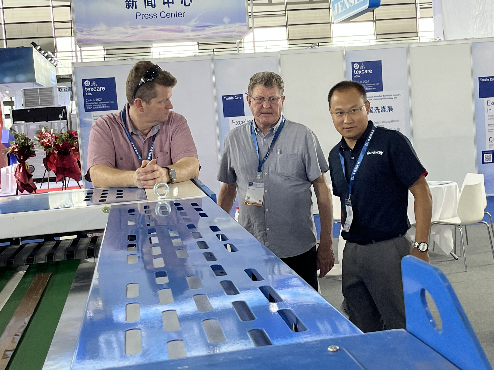
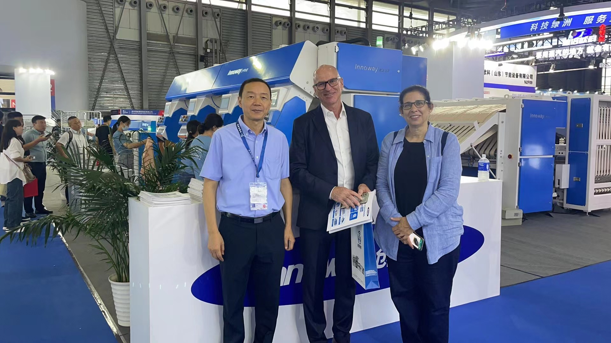

Innoway Makes a Grand Appearance at Texcare Asia 2023 China Laundry Show
September 27, 2023
Held from September 25 to 27, 2023, at the Shanghai New International Expo Center, Texcare Asia 2023 China Laundry Show concluded successfully. As a highly influential professional event in the Asian laundry industry, the exhibition was co-hosted by the China Commercial Federation Laundry Committee, China Light Industry Machinery Association, New Union Exhibition, and Messe Frankfurt. It brought together leading global industry enterprises, professional buyers, and technical experts to explore new opportunities for industry development. Innoway participated prominently with its full range of intelligent laundry finishing products, earning widespread attention and high recognition from both domestic and international customers through its leading technical capabilities and mature industry solutions.
Full Range of Core Products Debut at the Exhibition
Throughout the exhibition, Innoway’s booth attracted a steady stream of visitors. The company showcased a comprehensive lineup of core products, including feeder, folder, small pieces feeder, towel folder, and blanket folder.
In-Depth Negotiations with Global Customers, Demonstrating Strong Global Competitiveness
With over 20 years of industry expertise and technical accumulation, Innoway’s products excel in core areas such as intelligence, efficiency, and durability. They not only fully meet the upgrading needs of the domestic laundry industry but also comply with the high standards and strict requirements of the international market. During the exhibition, visitors included domestic laundry enterprises, hotel groups, medical institutions, and textile rental service providers, as well as overseas professional buyers from Europe, the Americas, Southeast Asia, and other regions. These customers engaged in in-depth discussions with Innoway’s technical and sales teams on topics such as equipment procurement, customized solutions, and overseas agency cooperation, expressing strong interest and clear intent to collaborate with Innoway’s product technologies and industry solutions.
Focus on Technological Innovation to Drive High-Quality Industry Development
Innoway’s participation in Texcare Asia 2023 China Laundry Show served as a comprehensive showcase of its brand strength and technological achievements. It not only further solidified the company’s leading position in the domestic laundry flatwork finishing equipment sector but also effectively enhanced its brand visibility and influence in the global market.
Moving forward, Innoway will continue to prioritize technological R&D and product innovation, continuously iterating and upgrading its intelligent flatwork finishing equipment. With more efficient and intelligent products and solutions, the company will empower the automation and digital transformation of the global laundry industry, create greater value for global customers, and contribute to the high-quality, sustainable development of the industry.



About Innoway
Innoway has over 20 years of expertise in R&D and manufacturing of automation technologies and products for flatwork finishing processes in the laundry industry. As a top-tier manufacturer in China with leading R&D capabilities in this field, the company consistently listens to customer needs and delivers products and services driven by innovation and reliable quality. Its products are widely exported to major global markets including the United States, Europe, and Southeast Asia.